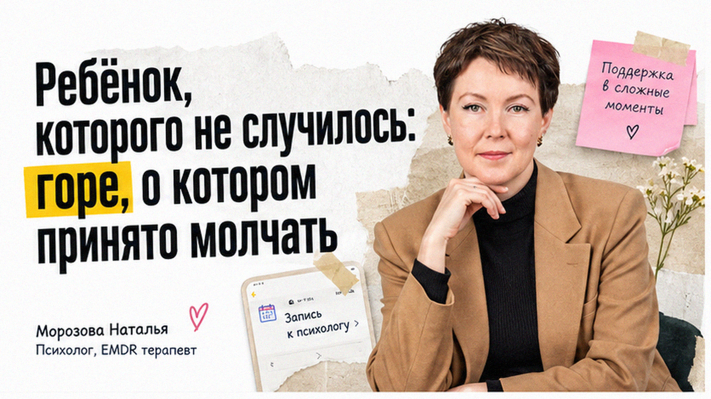
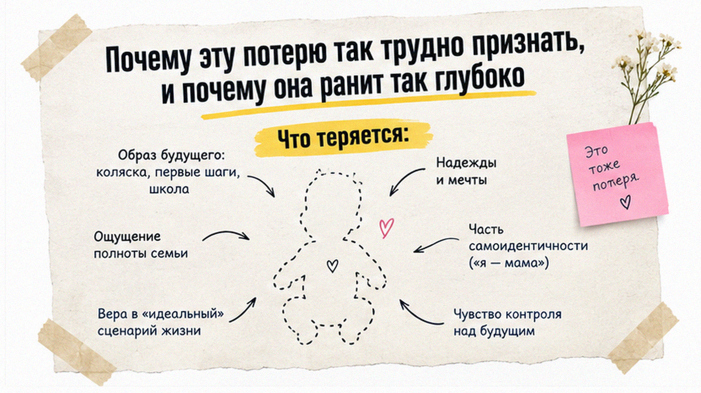
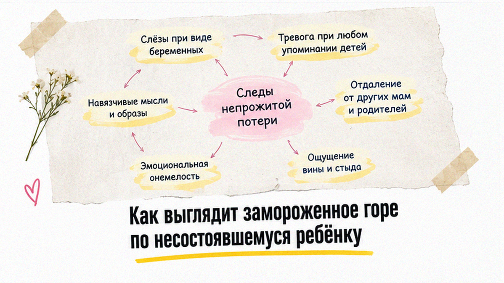
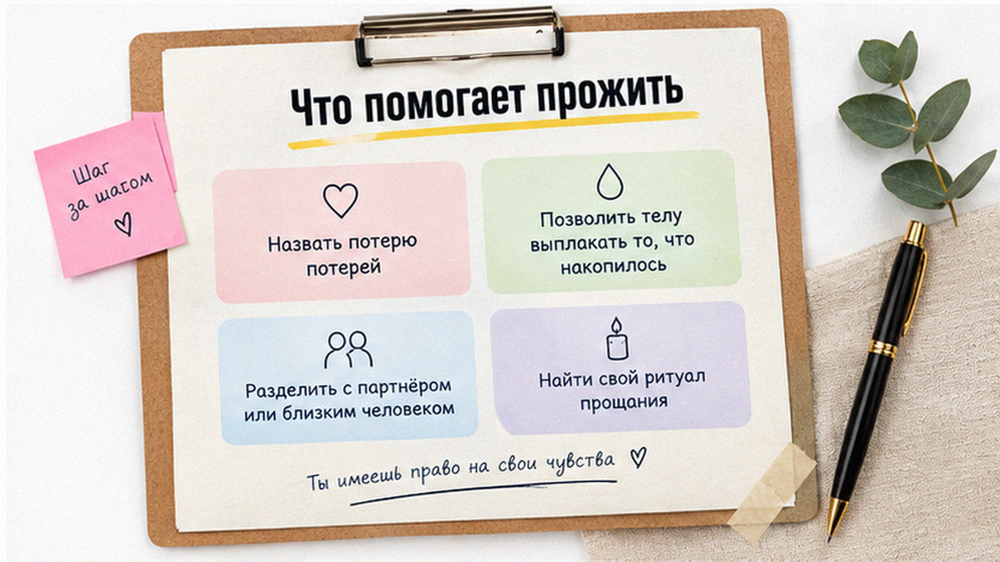

Любовь к тому, кого вы не успели увидеть, настоящая. Просто ей некуда деться.
Вика и её муж шли по торговому центру, и она вдруг свернула в сторону, чтобы не проходить мимо детского отдела. Муж не спросил, почему. Они оба знали. Три года назад была беременность, одиннадцать недель, потом тишина на УЗИ. «Мы никому не говорили, - рассказывала Вика. - Все сразу сказали бы: ну хорошо, что рано».
Я - Наталья Морозова, психолог, специалист по EMDR. Выкидыш, замершая беременность, неудачные протоколы ЭКО, годы ожидания без результата - всё это настоящие утраты. Одинокие, потому что считается, что «ничего ведь не было».

Когда беременность обрывается, теряется не «срок», а целый мир: имя, комната, мысленные разговоры, планы на лето. Многие успевают полюбить в первые дни. Привязанность формируется очень рано.
Добавляются другие слои. Женщина перестаёт доверять телу: «оно не справилось». Появляется вина, часто беспочвенная. Партнёры оказываются в разных состояниях: одному нужно говорить, другому молчать. А окружающие либо молчат, либо произносят фразы, от которых хуже: «значит, так надо», «природа знает».
Нет похорон, нет места для памяти, нет общепринятого прощания. Горе остаётся невидимым и поэтому непрожитым. Оно уходит в тревогу при новой беременности, в избегание, в охлаждение между близкими.
Запись на бесплатную пробную 30-минутную сессию с Натальей Морозовой ТУТ

Иногда горе всплывает спустя годы. На дне рождения ребёнка подруги, ровесника вашего. В кабинете врача. В дату, которую вы будто забыли.
Вика рассказывала: «Я думала, давно прошло. А потом у сестры родилась дочка, и я два дня не выходила из комнаты». Тело помнит то, что голова отодвинула.
В EMDR-работе мы идём бережно и не требуем подробных пересказов. Мы работаем с образами, ощущениями и убеждениями: «я не смогла», «со мной что-то не так», «я не заслуживаю». Они теряют силу, и остаётся правда: любовь была, потеря реальна.
Многим помогает обряд: письмо, имя, свечка. Мы можем придумать его вместе. Горе с формой легче нести.

Запись на бесплатную пробную 30-минутную сессию с Натальей Морозовой ТУТ
Можно. Привязанность определяется не неделями, а тем, сколько смысла и надежд вы вложили в это будущее.
Страх естественен, и с ним работают отдельно, чтобы входить в новую беременность не в режиме паники. Психолог не врач; при кризисных состояниях - 112. Вопросы здоровья обсуждайте с врачом.
Один говорит, другой молчит — это не всегда «не любит» или «не переживает». У людей разный темп, разные детские сценарии и разная смелость показывать боль. Важно не соревнововаться в горе, а найти хотя бы одно место, где можно назвать потерю потерей: без сравнения «кому больнее» и без обесценивания своих чувств. На сессии можно учиться говорить о потере так, чтобы вас слышали, даже если слова сначала даются трудно. Это не про «быстрее забыть», а про то, чтобы боль перестала управлять каждым днём.
Запись на бесплатную пробную 30-минутную сессию с Натальей Морозовой ТУТ
Ещё больше полезного в Telegram-канале ТУТ